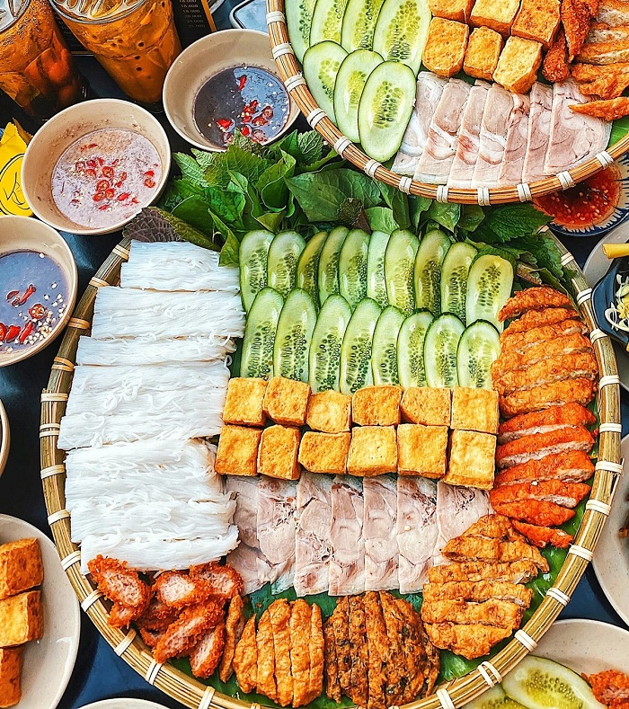

Bun dau mam tom

Description
Delicious Vietnamese dish that would be absolutely horrendous for gringos, can't wait to try it again. Tbf, the
smell is absolutely pungent but once you get over that hurdle you unlock a whiplash of flavor. The sweet and
saltiness of the shrimp paste, the freshness of the herbs and the vermicelli conbined with the chewiness of pork
belly, crunchiness of fried spring rolls, etc. Straight up fuego
Ingredients
- Boiled pork belly
- Vermicelli
- Deep fried spring rolls
- Shrimp paste
- Fresh herbs (cilantros, lettuce, mint)
- Fish sauce
- Lime, garlic
- Optional: Intestines
Steps
- Make your sauce with water, fish sauce, shrimp paste, garlic and a squeeze of lime
- Serve your cooked protein on a dish with vermicelli and fresh herbs
- Sauce it up, wrap vermicelli in lettuce and herbs, bite sized, dip your protein
- Leave no traces of food behind